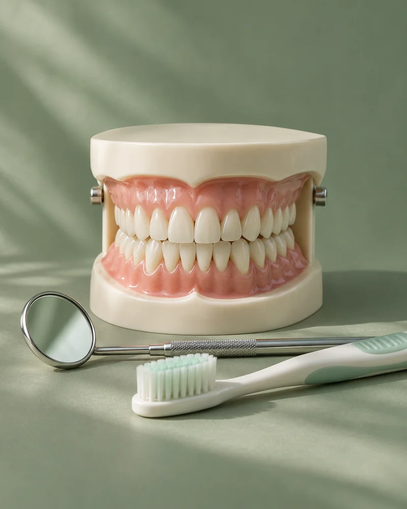

Tedaviler
Tüm hizmetleri görHekimlere göre hizmetler
Dr. Dt. F. Merve BAŞ · Diş Hekimliği
Muayene ve koruyucu diş hekimliği 4
- Ağız Bakımı Eğitimi
- Koruyucu Dolgu
- Koruyucu Diş Hekimliği
- Ağız Bakımı(Diş Ve Diş Eti Bakımı)
Diş çekimi ve ağız cerrahisi 8
- Diş Çekimi
- Komplikasyonlu Diş Çekimi
- Süt Dişi Çekimi
- Acil Diş Çekimi
- Lazer Cerrahisi
- Gömülü Yirmi Yaş Dişi Tedavisi
- Gömülü Diş Çekimi
- 20'lik Diş Çekimi
Diş eti sağlığı 5
- Periodontal Plastik Cerrahisi Yumuşak Doku Greftleri
- Periodontoloji
- Diş Taşı Temizliği
- Diş Eti Estetiği
- Pembe Estetik
İmplant ve kemik uygulamaları 5
- Kemik Grefti
- Dikişsiz İmplant
- Cerrahi İmplant
- İmplant Uygulamaları ve Farklı Üst Yapı Tercihleri
- İmplant
Protezler, kronlar ve köprüler 16
- Overdenture Protezler
- Köprü
- Tam Ve Parsiyel Protezler
- Tam Diş Protezi
- Köprü Uygulaması
- Kısmi ya da tam dişsizlik durumları ve Protetik Tedavi
- Hareketli Protez
- Empress Porselen Kaplama
- E-Max Diş Kaplama
- Sürgülü Protezler
- Çıtçıtlı Protezler
- Deflex Protezler
- Kron-köprü
- Zirkonyum
- Zirkonya Restorasyonlar
- Zirkonyum Porselen Kronlar
Dolgu ve estetik diş hekimliği 14
- Inlay - Onlay (Porselen Dolgu)
- Bonding
- Diş Beyazlatma
- Diastema Kapama
- Kompozit Veneeer Uygulamalar
- Porselen Laminate Veneer
- Direkt ve İndirekt Kompozit Lamina
- Laminate Veneer
- Lamina Uygulamaları
- Gülüş Tasarımı
- Estetik Dolgu
- Estetik Diş Hekimliği Uygulamaları
- Estetik Porselen
- Diş Dolgusu
Endodonti ve kanal tedavisi 6
- Apikal Rezeksiyon
- Lezyonlu Kök Kanal Tedavisi
- Rotary Sistemle Kanal Tedavisi
- Kanal Tedavisi
- Endodonti
- Kök Kanal Tedavisi
Ortodonti ve çocuk diş hekimliği 6
- Estetik Braketler
- Ortodontik Tedavi
- Erken Ortodontik Tedavi
- Diş Teli Tedavisi
- Pedodonti
- Şeffaf Plak Tedavisi (Telsiz Tedavi)
Diş sıkma, çene eklemi ve apareyler 6
- Diş Sıkma Botoksu
- Bruksizm Tedavisi
- Diş Sıkma ve Gıcırdatma Tedavisi
- Horlama Apareyi
- Çene Eklemleri Tedavisi
- Botoks
Görüntüleme ve dijital diş hekimliği 5
- Dental X-Ray
- Panoramik Röntgen
- Dijital Diş Hekimliği
- Bilgisayar Destekli Diş Tasarımı
- X-Ray
Anestezi ve sedasyon 4
- Dental Anestezi
- Sedasyon
- Genel Anestezi Altında Diş Tedavileri
- Lokal Anestezi
Op. Dr. Abdulbaki BAŞ · Ortopedi ve Travmatoloji
Bir işlemin nerede yapılabileceğini ve muayene sürecini hekiminizle görüşebilirsiniz.
Omuz, dirsek ve el 15
- Latarjet Ameliyatı
- Biseps Tenodezi
- Artroskopik Akromioplasti
- Üst Ekstremite Cerrahisi
- Omuz Yırtıkları Tedavisi
- Artroskopik Kalsifik Tendinit Cerrahisi
- Artroskopik Slap Onarımı
- Karpal Tünel Ve Sinir Basısı Onarımı
- El Cerrahisi
- Omuz Ameliyatı
- Omuz Artroskopisi
- Artroskopik Bankart Onarımı
- Dirsek Artroskopisi
- Rotator Kılıf (Cuff) Onarımı
- Dirsek Cerrahisi
Travma ve ortopedik cerrahi 21
- Kapalı Manipülasyon
- Travma Cerrahisi
- Ameliyatsız Tenisçi Dirseği Tedavisi
- Kemik İltihabı ( Osteomyelit) Tedavisi
- Kırık Ve Burkulmalarda Sabitleme Ve Alçıya Alma
- Artroskopi
- Pediatrik Ortopedi Cerrahisi
- Kemik Uzatma Cerrahisi
- Kırık Cerrahisi
- Artroskopik Cerrahi
- Açık Redüksiyon Internal Fiksasyon(Orif)
- Artroskopik Tenisçi Dirseği Cerrahisi
- Minimal Invaziv Cerrahi
- Mikrocerrahi
- Fibröz Tümörün Cerrahi Olarak Çıkarılması
- Apse Insizyonu Ve Drenajı
- Eklem Cerrahisi
- Tendon Onarımı
- Ampütasyon
- Diz Altı Ampütasyonu
- Diz Ampütasyonu
Eklem enjeksiyonları ve diğer uygulamalar 13
- Kortizon Enjeksiyonu
- Lokal Anestezi
- Fizik Tedavi
- Kapalı Eklem Aspirasyonu
- Ameliyatsız Fibromiyalji Tedavisi
- Kemik Erimesi Tedavisi
- Eklem Enjeksiyonu
- Eklemiçi Ve Yumuşak Doku Enjeksiyonları(Kortizon Enjeksiyonu)
- Eklem Enjeksiyonu(Kortizon Enjeksiyonu)
- Ağrı Pompası
- Artritte Steroid Tedavisi
- Artrosentez (Eklem İçi Sıvı Aspirasyonu)
- Eklem Aspirasyonu
Diz, menisküs ve bağ yaralanmaları 14
- Diz Problemleri
- Diz Bağı Yaralanmaları
- Diz Kapağı Çıkığı Cerrahisi
- Menisküs Cerrahisi
- Menisektomi
- Menisküs Tedavisi
- Çapraz Bağ Yırtıkları Tedavisi
- Ameliyatsız Diz Ağrısı Tedavisi
- Ameliyatsız Diz Kireçlenmesi Tedavisi
- Ameliyatsız Diz Sıvı Kaybı Tedavisi
- Ameliyatsız Menisküs Yırtığı Tedavisi
- Diz Artroskopisi
- Menisküs Alımı
- Ön Çapraz Bağ Bağların Ameliyatı
Ayak ve ayak bileği 12
- Topuk Dikeni Tedavisi
- Halluks Amputasyonu
- Ayak Ve Ayak Bileği Artrodezi
- Batık Tırnak Tedavisi
- Ayak Ve Ayak Bileği Laparoskopik Artrodezi
- Ayak Bileği Artroskopisi
- Ayak Ve Ayak Bileği Cerrahisi
- Halluks Valgus Onarımı
- Morton Nöroma Çıkarılması
- Ayak Parmağı Ampütasyonu
- Ayak Amputasyonu
- Diyabetik Ayak Tedavileri
Görüntüleme ve değerlendirme 4
- Kemik Yoğunluğu Ölçümü(Kemik Taraması)
- Sinir İletim Çalışmaları
- Bebek Kalça Ultrasonu
- Yeni Doğan Kalça Ultrasonu
Kalça ve eklem protezleri 12
- Total Uyluk Protezi Ameliyatı
- Ameliyatsız Kalça Ağrısı Tedavisi
- Ameliyatsız Kalça Kireçlenmesi Tedavisi
- Total Diz Ameliyatı
- Kalça Protezi
- Diz Protezleri
- Artroplasti
- Diz Artroplastisi
- Total Kalça Replasmanı
- Total Diz Replasmanı
- Eklem Protezleri
- Elde Eklem Replasmanı
Bel, boyun ve omurga 13
- Vertebroplasti
- Ameliyatsız Boyun Kayması Tedavisi
- Ameliyatsız Boyun Kanal Darlığı Tedavisi
- Omurga Enjeksiyonları Tedavisi
- Ameliyatsız Bel Ağrısı Tedavisi
- Ameliyatsız Bel Düzleşmesi Tedavisi
- Ameliyatsız Bel Kanal Darlığı Tedavisi
- Ameliyatsız Bel Kayması Tedavisi
- Ameliyatsız Boyun Ağrısı Tedavisi
- Ameliyatsız Boyun Düzleşmesi Tedavisi
- Ameliyatsız Boyun Fıtığı Tedavisi
- Bel Cerrahisi(Minimal Invaziv Lomber Spinal Füzyon)
- Kifoplasti